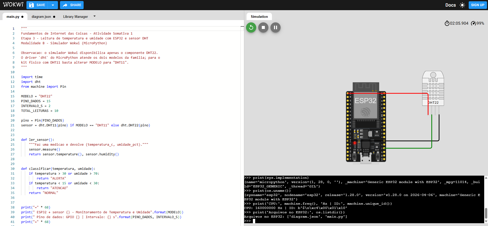

Configurar o microcontrolador ESP32 para a execução de código em MicroPython e comprovar, por meio do console Shell (REPL), que a placa foi reconhecida e está pronta para receber e executar programas.
Antes da verificação do firmware, o circuito foi montado no editor de diagrama do Wokwi, conectando o sensor DHT ao ESP32 conforme a tabela abaixo. O pino de dados foi ligado ao GPIO 15, escolhido por ser um pino digital de uso geral livre na placa.
| Pino do sensor DHT | Pino do ESP32 | Cor do fio | Função |
|---|---|---|---|
| VCC | 3V3 | Vermelho | Alimentação 3,3 V |
| GND | GND | Preto | Referência de terra |
| SDA (DATA) | GPIO 15 | Verde | Barramento digital de dados |
Com a simulação em execução, o script foi interrompido para acesso ao prompt interativo >>> do MicroPython. Nele foram executados os comandos a seguir, que identificam a implementação da linguagem, o modelo da placa, a frequência do processador, o identificador único do chip e os arquivos presentes no sistema de arquivos interno.
>>> import sys, os, machine
>>> print(sys.implementation)
(name='micropython', version=(1, 28, 0, ''), _machine='Generic ESP32 module with ESP32',
_mpy=11014, _build='ESP32_GENERIC')
>>> print(os.uname())
(sysname='esp32', nodename='esp32', release='1.28.0', version='v1.28.0 on 2026-04-06',
machine='Generic ESP32 module with ESP32')
>>> print('CPU:', machine.freq(), 'Hz | ID:', machine.unique_id())
CPU: 160000000 Hz | ID: b'\x5c\xe4\x00\xc0\x01\x10'
>>> print('Arquivos no ESP32:', os.listdir())
Arquivos no ESP32: ['diagram.json', 'main.py']
As respostas confirmam que o firmware MicroPython v1.28.0 está ativo sobre um módulo ESP32, operando a 160 MHz, com o sistema de arquivos acessível e contendo o programa main.py. O ambiente está, portanto, pronto para a execução do código da Etapa 3.
